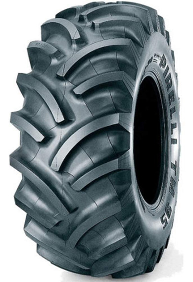
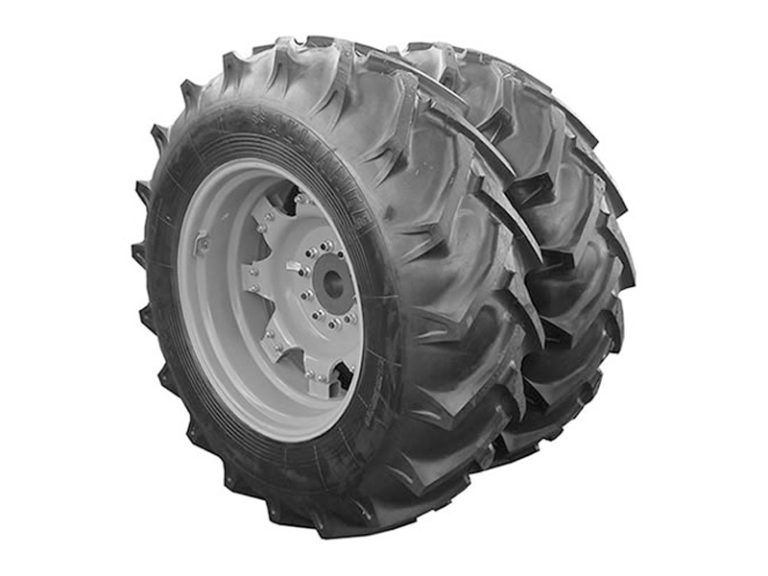
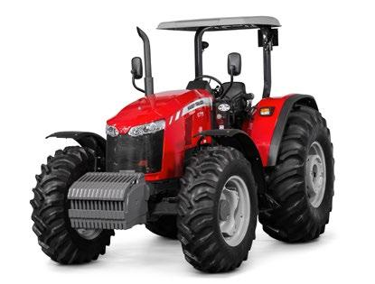

-
Pneu Balão
Instalado ou não
Instalado= R$9.000 Solto= R$7.000
-
Filipado
Instalado= R$ 10.000,00
Solto=R$ 4.800,00
Massey Ferguson (a melhor marca)


Instalado ou não
Instalado= R$9.000 Solto= R$7.000
Instalado= R$ 10.000,00
Solto=R$ 4.800,00
 MF 6711
MF 6711
Capacidade de Levante no 3 pontos 4950kg
Números de Valvulas 2 ou 3
Potência(cv) 115
Torque Máximo 1.500 rpm-Nm (mkgf) 460
Transmissão Sincrozinada 12 X 12
Vazão do Controle Remoto (l/min) 57/98
A Massey Ferguson modernizou sua linha de tratores com a nova série MF 6700R Dyna-4 composta por três modelos. São máquinas desenvolvidas para melhorar o desempenho, eficiência, produtividade e reduzir o consumo de combustível. Por exemplo, o MF 6711R é equipado com motor AGCO POWER Turbo de quatro cilindros com 112 cv e tanque de combustível com capacidade para 210 litros. A transmissão Dyna-4, sinônimo de eficiência, produtividade e conforto, é reconhecida mundialmente pelos produtores rurais por sua facilidade de operação. Para isso, possui alavanca de reversão à esquerda do volante, onde o operador seleciona o sentido de deslocamento (frente/ré) e realiza a troca de marchas, que também podem ser feitas pela alavanca “T”, posicionada do lado direito. O câmbio Dynashift elimina a necessidade do uso do pedal de embreagem para a troca de marchas e/ou reversão do movimento de frente e ré. Com 16 marchas a frente e a ré, a nova série MF 6700R Dyna-4 possui um escalonamento, que permite escolher a velocidade ideal para a maioria das atividades rurais.
A cabine oferece assento ergonômico para o condutor e mais espaço para movimentação. Os controles, graças ao longo console, agora estão mais integrados com os instrumentos da transmissão, hidráulica e do PTO perfeitamente ao alcance do operador. O novo painel contém um display digital que oferece informações de forma clara, sejam elas operacionais ou funcionais. Desenvolvido para trabalhos pesados, a série MF 6700R Dyna-4, segundo a fabricante, apresenta a mais elevada capacidade de levante no sistema hidráulico da sua categoria. Para acionar o sistema, basta o operador pressionar uma tecla. Seu sistema de levante é da categoria III, traduzindo sua aptidão ao trabalho pesado. A série MF 6700R Dyna-4 foi desenvolvida para utilização em várias aplicações como plantio, atividades de preparo de solo e pecuária. Como opcionais, a fabricante oferece ao produtor rural os sistemas de piloto automático Auto-Guide 3000 e telemetria AgCommand™, joystick para trabalhar com lâmina frontal e creeper, que é um super redutor de velocidade.
Preço: R$320.000,00